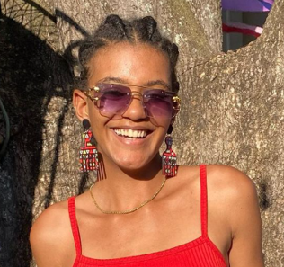
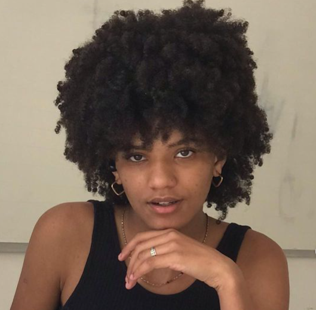
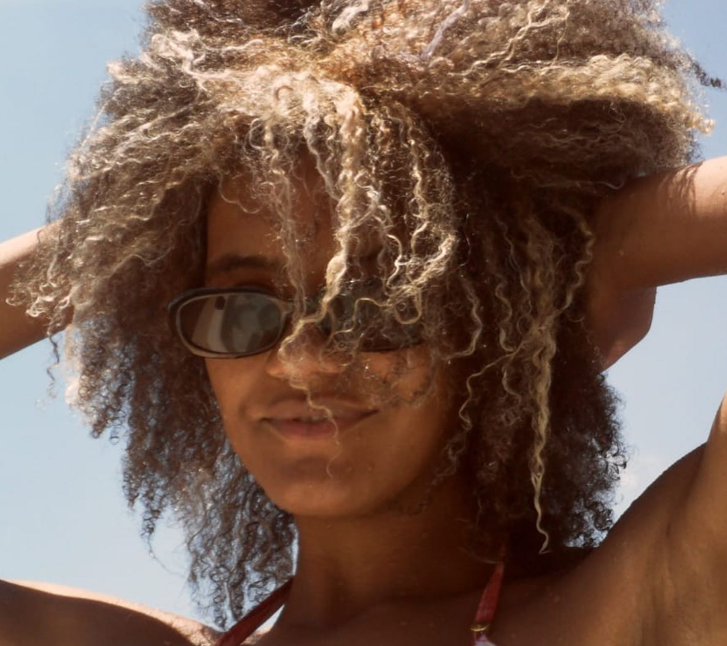
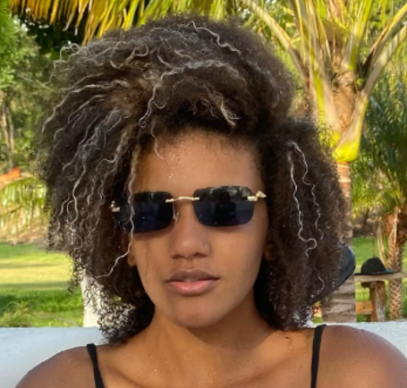
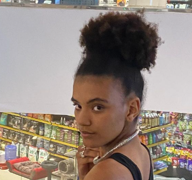

Exposição de Fotografias
"ENERGIA"
Emylle Soares
Emylle,conhecida também como “Emy” é ex aluna do cicalt, tem se aventurado no mundo da
cultura, cursando direito na PUC Minas e está sempre passando seus saberes através das redes sociais e da
oralidade com uma comunicação antrracista.
O projeto energia tem o objetivo de resgatar a ancestralidade que é um pilar fundamental para a construção
de suas identidades. Mostrando através da fotografia conexões com suas raízes que é mais do que uma herança
cultural; é uma forma de resistência contra os estigmas que ainda persistem. Entender-se como preto é um ato
de afirmação e orgulho, um reconhecimento da própria história e do valor que ela traz. Essa autocompreensão
alimenta a autoestima, permitindo que vocês, jovens se posicionem de forma assertiva em um mundo que muitas
vezes tenta silenciar suas vozes.
O projeto Étnico Racial tem por objetivo a implantação das leis 10.639/03 e 11.645/08 no CICALT, através de
ações interdisciplinares e colaborativas entre estudantes, professores e comunidade escolar. As Leis
10.639/2003 e 11.645/2008 visa inserir a história da cultura afro-brasileira e indígena nos currículos da
educação brasileira, reconhecendo e valorizando os aspectos herdados da história do negro africano e dos
indígenas nativos em nossa cultura local, contribuindo para a igualdade étnico racial. O objetivo é a
democratização da educação e o reconhecimento da história brasileira pela contribuição de todas as raças,
considerando a diversidade cultural presente nos costumes, credos, gastronomia, língua e tradições.



